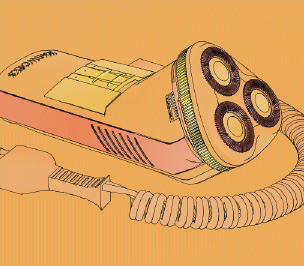

Color Wash

 Color Wash affects how the color of your model is displayed.
Color Wash affects how the color of your model is displayed.
It displays an image where the colors are washed out to give a more pastel look.
You can control the following parameters:
-
Outline Color — the color of the lines of the model
-
Outline Width — the thickness of the lines of the model; from Thin to Thick
-
Color Variation — from Uniform to Mottled
-
Wash Colors — from Vivid to Muted